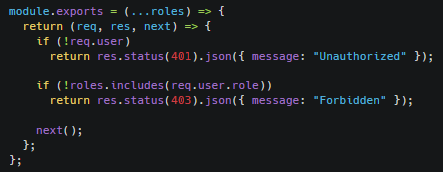
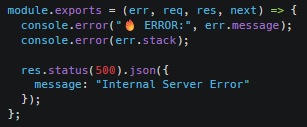
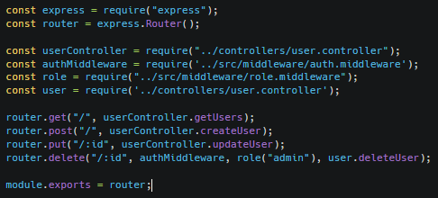
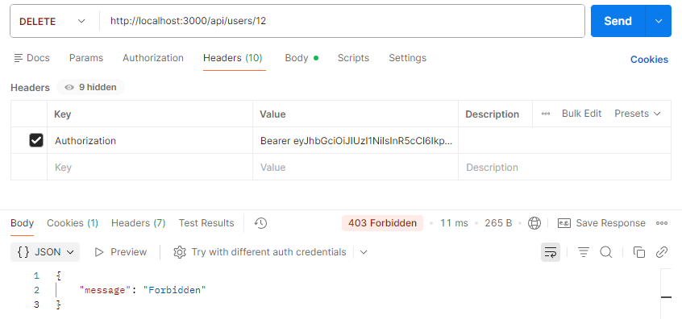
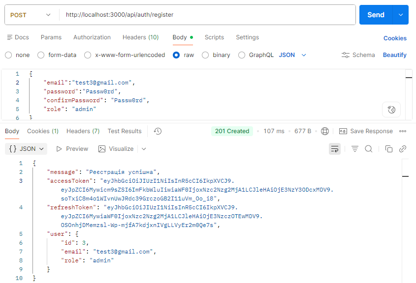
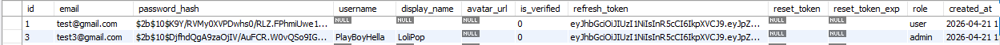
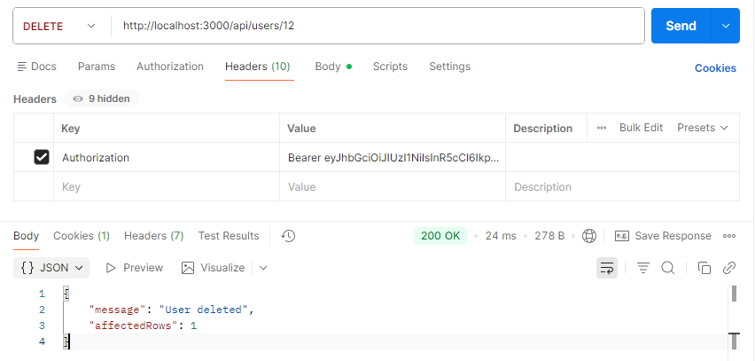

Додаємо ролі користувачам (admin/user/publisher) і робимо обмеження на видалення користувачів доступним тільки з ролью адмін + логування помилок + middleware для перевірки токена
логування помилок + middleware для перевірки токена
middleware/role.middleware.js
Зображення

middleware/error.middleware.js
Зображення

routes/user.routes.js
Зображення

Протестуємо API через Postman та проведемо аналіз отриманих результатів
Видалення користувача з різними ролями + (валідація даних, обробка помилок)
Зображення



